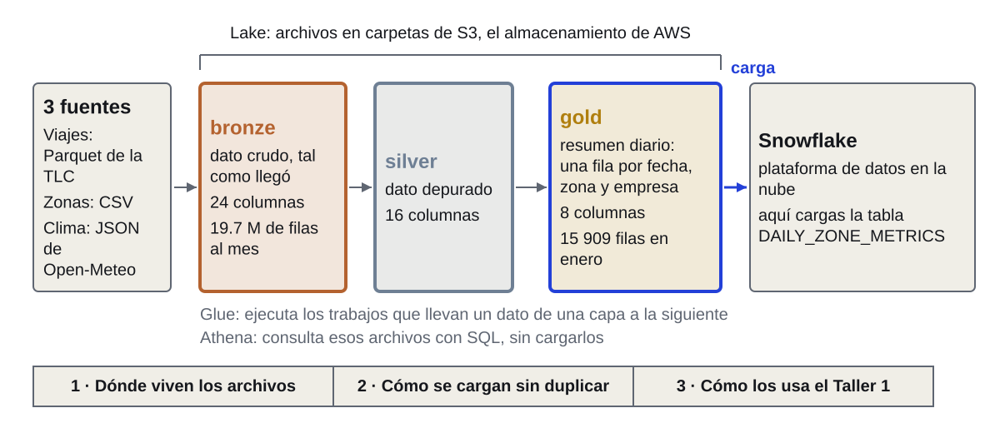
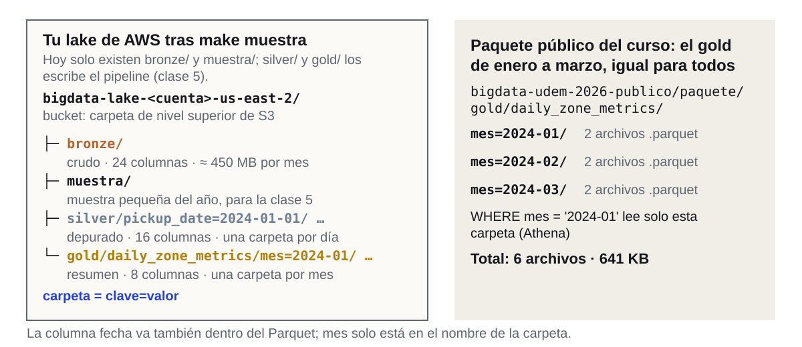
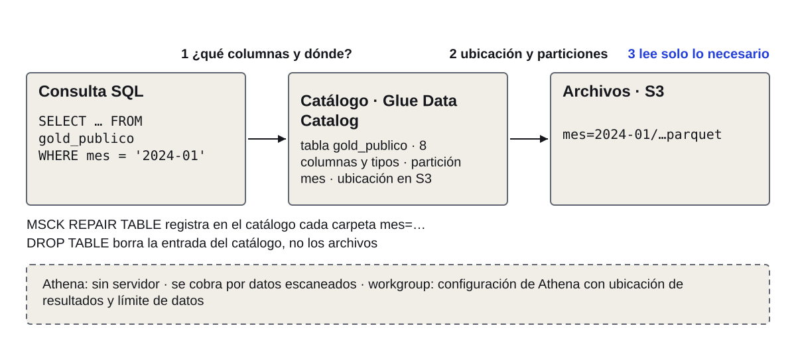
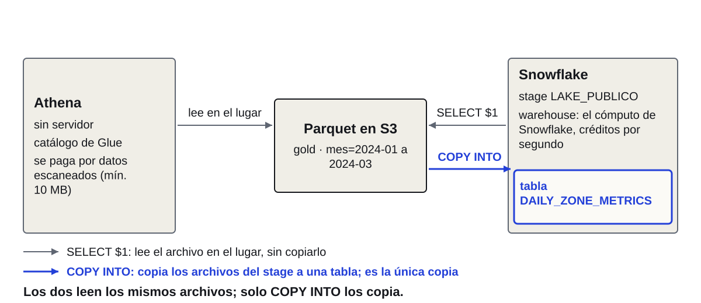
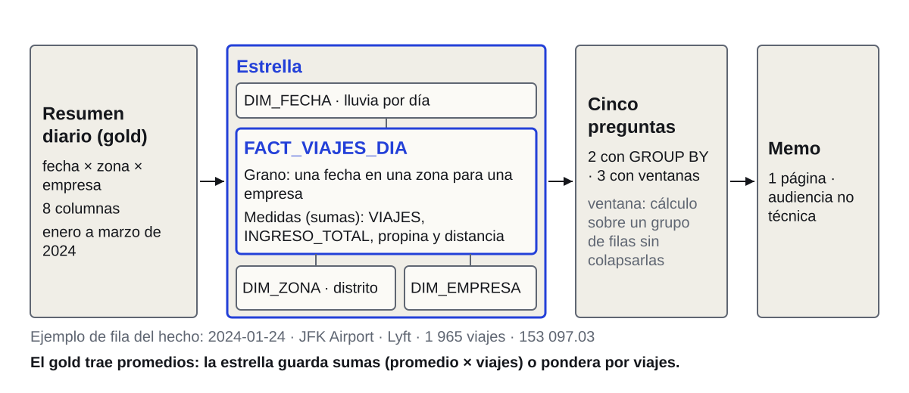
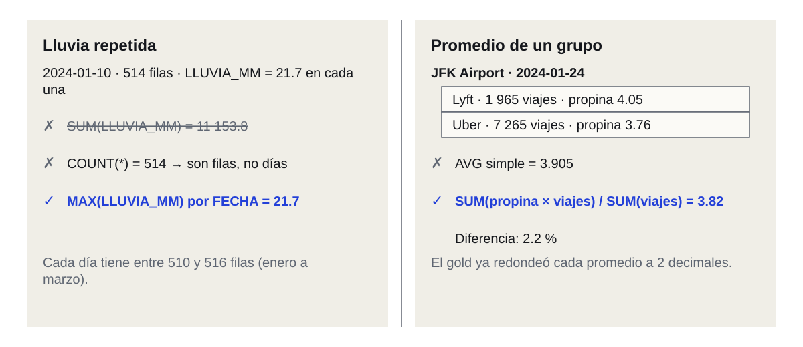
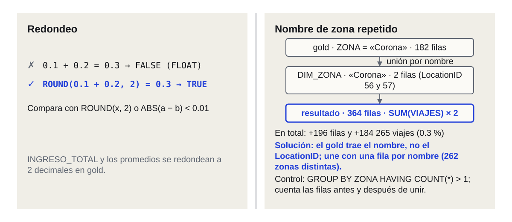
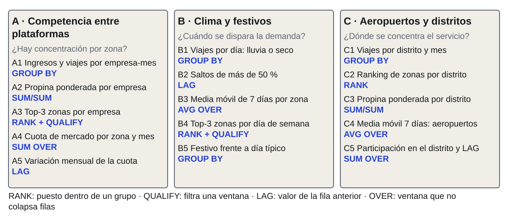
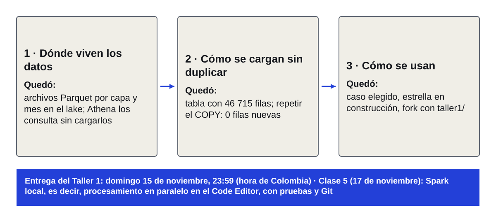

Big Data e Ingeniería de Datos
Clase 4 · De archivos a tablas, y Taller 1
Posgrado · UdeM · 10 nov 2026
El día tiene siete tramos: los pasos 10 a 12 de la guía (25 min), el lake y Athena (25), el Lab 4 (35), el descanso (20), el enunciado del Taller 1 (20), el trabajo en equipo (95) y el cierre (10). Todos completaron los pasos 1 a 9 (Code Editor, Snowflake con llave y GitHub); no hay un camino alternativo sin AWS. Los labs son individuales; la única ayuda es el instructor. Acción inmediata: el Space del Code Editor se apaga solo a los 60 minutos sin uso (docs/cada-sesion.md), así que al proyectar la portada cada persona entra a SageMaker Studio y pulsa Run space (paso 5.2 de docs/guia.md). Tarda de 3 a 5 minutos (5 min en la prueba propia del 8 nov. 2026, clase 3, slide 15) y el editor queda listo al terminar la slide 4. Tiempo: 1 min. Siguiente: la pregunta del curso y la cifra que hay detrás.
viajes de Uber y Lyft en NYC, 2024. Pregunta del curso: ¿la lluvia cambia los viajes en NYC? Se cruzan con clima y zonas.
Medición propia, 1 nov. 2026
Se retoma el caso del curso sin suponer la clase 3; la pregunta aparece completa en pantalla: ¿la lluvia cambia los viajes en NYC? La TLC (Taxi and Limousine Commission) es el regulador de taxis y plataformas de NYC y publica los viajes de las plataformas (base FHVHV, high volume for-hire vehicle: Uber y Lyft en los datos). El pipeline del curso procesa tres fuentes: viajes en Parquet, zonas en CSV y clima diario de Open-Meteo en JSON. Cifra: 239.5 M de filas de viajes en 2024, 5.4 GB de Parquet, unos 450 MB y 19.7 M de filas por mes (validacion/resultados.md, sección A1-A2, Glue large de 6 workers G.1X, 12 meses, 162 s, ≈ US$0.12; medido el 1 nov. 2026). Un resumen diario es una tabla con una fila por fecha, zona y empresa: la que se llama gold. La de enero 2024 tiene 15 909 filas y 19 650 023 viajes (validacion/contenido/clase01_datos_reales.md §4.1, consulta Snowflake del 2 nov. 2026; clase03_medidas.md, M12). Lo que dejó abierto la clase 3: ese resumen repite la lluvia del día en cada una de sus filas; el 2024-01-10 hay 514 filas con 21.7 mm cada una y su suma da 11 153.8, que no es la lluvia de ese día (M12; confirmado en el paquete público de esta clase, 10 nov. 2026). Hoy se ve de dónde sale ese resumen, cómo llega a Snowflake sin duplicarse y, en la segunda mitad, cómo lo usan los equipos en el Taller 1. «Resumen diario» se define en la slide siguiente (gold). Tiempo: 3 min. Siguiente: el mapa del día en tres tramos.
Los viajes salen de tres fuentes, pasan por tres capas de archivos y llegan a Snowflake

TLC: el regulador de taxis y plataformas de NYC. Gold: el resumen diario.
Problema: los viajes de NYC no nacen como una tabla; son archivos de tres fuentes: los viajes en Parquet que publica la TLC (Taxi and Limousine Commission, el regulador de taxis y plataformas de NYC), las zonas en CSV y el clima diario de Open-Meteo en JSON. Idea de ingeniería: un lake (lago de datos) guarda esos archivos tal como llegan, en carpetas de S3 (el almacenamiento de objetos de AWS), y los ordena en tres capas, la arquitectura medallion. Bronze guarda el dato crudo (24 columnas por viaje; unos 450 MB y 19.7 M de filas por mes de enero). Silver lo depura (16 columnas). Gold lo resume por fecha, zona y empresa (8 columnas): es el resumen diario, con 15 909 filas en enero (validacion/resultados.md, A1-A2; clase01_datos_reales.md §4.1). Glue es el servicio de AWS que ejecuta los trabajos (jobs) de transformación entre capas; el mismo servicio también guarda el catálogo (Glue Data Catalog), que se ve en la slide 9. Athena es el servicio de AWS que consulta esos archivos con SQL sin cargarlos. Snowflake es la plataforma de datos en la nube donde cargas la tabla y donde corre el trabajo SQL del curso. El día sigue ese camino en tres tramos, marcados abajo del diagrama: dónde viven los archivos (slides 5 a 13), cómo se cargan sin duplicar (14 a 17, Lab 4) y cómo los usa el Taller 1 (19 a 27). Qué resuelve: un vocabulario común para todo el día. Qué no: todavía no explica cómo se lee cada capa; eso va en las slides 7 a 9. Tiempo: 3 min. Siguiente: el problema técnico que ordena el día: llevar archivos a una tabla sin duplicar filas.
¿Cómo llegan los viajes a Snowflake sin duplicarse, si primero son archivos?
Cargar enero dos veces sin control deja 31 818 filas, no 15 909, y no avisa.
Problema: una carga que se ejecuta dos veces duplica cada fila y no da error. Es el mismo mecanismo de la clase 2 (una unión que repite filas): al unir ORDERS (1 500 000 filas) con LINEITEM (6 001 215) cada pedido se repitió una vez por línea y SUM(O_TOTALPRICE) pasó de 226.8 a 1 134.4 mil millones, 5.0 veces, sin aviso (clase 2, SF1; clase03_medidas.md, M13). Con el gold de enero ocurriría lo mismo (la cifra está en pantalla): cargar los archivos dos veces dejaría 31 818 filas en lugar de 15 909 y 39 300 046 viajes en lugar de 19 650 023 (el doble de las cifras de clase01_datos_reales.md §4.1), y cualquier consulta daría totales que parecen válidos. Idea de ingeniería: la carga debe ser idempotente, es decir, ejecutarla una o varias veces deja la tabla en el mismo estado (se define en pantalla en la slide 16). Los tres tramos del día, marcados en el diagrama anterior, son: dónde viven los archivos, cómo se cargan sin duplicar y cómo los usa el Taller 1. Antes hay que ver qué se carga y desde dónde: para tener un lake propio, los pasos 10 a 12 de la guía lo crean en tu cuenta. Tiempo: 3 min. Siguiente: pasos 10 y 11, que crean el lake y los recursos de Snowflake.
Para recorrer un lake, creas el tuyo en AWS y en Snowflake
Paso 10: cd ~/bigdata; make deploy.
Crea lake, Glue y Athena: «Deploy completado».
Paso 11: cd ~/bigdata; make snowflake; escribe yes.
Crea warehouse y base: «Conexión … guardada».
Tiempo (12 min): 1 de presentación y 11 de trabajo individual; esta slide queda proyectada. La única ayuda es el instructor. Para qué esta parada: hasta aquí viste el camino de los datos en un diagrama; ahora creas el tuyo, un lake real en tu cuenta de AWS, para recorrerlo capa por capa. Para la demo de Athena (slides 10 a 13) solo necesitas lo que crea el paso 10: el workgroup bigdata-wg y la base bigdata_lake; los datos de la demo no salen de tu lake sino del bucket público del curso. Atención: en el Lab 4 vas a cargar otro bucket, el público del curso, que trae el gold de enero a marzo igual para todos; tu lake y ese paquete son cosas distintas. Pasos 10 y 11 de la guía. Fuente: docs/guia.md, pasos 10 y 11, docs/referencia.md (make deploy, make snowflake) y docs/problemas.md; la guía abierta en otra pestaña trae las salidas de ejemplo y los errores. Dónde: la terminal del Code Editor (Terminal > New Terminal); antes de cada make, cd ~/bigdata, y el prompt debe terminar en ~/bigdata$. Paso 10: cd ~/bigdata y make deploy. Para qué: crea en tu cuenta el lake (el bucket S3 de datos), los trabajos de Glue, el workgroup de Athena bigdata-wg, con corte de 1 GB escaneado por consulta, y los límites de gasto, y sube el código del pipeline. Debes ver, al final, «Apply complete! Resources: 23 added, 0 changed, 0 destroyed.» y «==> Deploy completado»; la guía lo muestra con lake_bucket = "bigdata-lake-<cuenta>-us-east-2". Medición: la primera aplicación de Terraform creó 22 recursos en 65 s y un deploy repetido tardó 21 s (validacion/resultados.md, V3 y V5, 25 oct. 2026; en una cuenta nueva de estudiante no se midió). Paso 11: cd ~/bigdata y make snowflake; el script pide confirmar el plan: al ver «Enter a value:» escribe yes. Para qué: crea el warehouse BIGDATA_WH (XS, suspensión a los 60 s), la base BIGDATA, el rol BIGDATA_DEV y los stages, y deja la conexión del pipeline. Debes ver «Apply complete! Resources: 39 added, 0 changed, 0 destroyed.», el plan de la fase 2 sin eliminar recursos y, al final, «==> Conexión de AIRFLOW_SVC guardada en el secreto bigdata/snowflake.» (AIRFLOW_SVC es el usuario de servicio del pipeline; no aparece en pantalla porque no se usa hasta la clase 5). Medición: el apply de Snowflake creó 22 recursos en 13 s en la validación (resultados.md, V3, 25 oct. 2026); con 39 recursos y la fase 2 no se midió. Errores comunes (docs/problemas.md; causa y cómo evitarlos): «Falta la configuración en S3. Corre make setup»: no existe config/aws.tfvars; cd ~/bigdata && make setup. El mismo mensaje con make setup hecho: otro AWS_REGION; export AWS_REGION=us-east-2. «El plan destruye recursos»: el plan elimina o reemplaza algo; revisa la lista antes de confirmar. make deploy se queda colgado o pierde el lock: ejecútalo en una terminal normal, no desde una herramienta con tiempo límite. «JWT token is invalid»: la llave del paso 7 no quedó registrada; repite make snowflake-conexion. «Error acquiring the state lock»: queda un apply interrumpido; terraform force-unlock con el ID del mensaje. Siguiente: paso 12, que baja el año de viajes mientras Glue trabaja.
Descargas el año de viajes con Glue; mientras, vemos cómo se ordena un lake
Paso 12: cd ~/bigdata; make muestra.
Glue baja el año (5.4 GB) a bronze y una muestra (clase 5).
Tras unos 5 min, ves «muestra OK».
Tiempo (13 min): 1 de presentación y 12 de trabajo individual; esta slide queda proyectada. Fuente: docs/guia.md, paso 12, docs/referencia.md (make muestra) y docs/problemas.md. Paso 12 de la guía. Comando: cd ~/bigdata y make muestra. Para qué (el nombre «muestra» engaña): el job de Glue descarga a bronze los 12 meses de viajes FHVHV de 2024 (≈ 5.4 GB de Parquet, validacion/resultados.md) y además deja una muestra pequeña, que es lo que se usará en local en la clase 5; el año completo queda en bronze. Es la primera vez que el lake de tu cuenta tiene datos. Para qué sirve hoy: deja bronze y la muestra en tu lake para que puedas recorrerlo; el gold de enero a marzo que cargas en el Lab 4 no sale de aquí sino del paquete público del curso, y el uso de estos datos con el pipeline es de la clase 5. Tiempo y costo según la guía: unos 5 min y ≈ US$0.15; la terminal queda quieta varios minutos entre líneas, es normal y no se cierra. Debes ver «==> bronze OK», «==> muestra OK» y «==> Muestra lista en s3://bigdata-lake-<cuenta>-us-east-2/muestra». Con make estado (desde ~/bigdata) ves los últimos job runs de Glue si dudas de si terminó. Tiempo en una cuenta nueva: no se midió (la guía da «~5 min»). Mientras corre, no hay nada que hacer en la terminal; el instructor pasa a la teoría del lake (slide 7) cuando la mayoría haya lanzado el comando; quien termine más tarde sigue con el Lab 4 después. Errores comunes (docs/problemas.md): TIMEOUT: repite make muestra, retoma desde lo descargado; ModuleNotFoundError: pipeline: falta make deploy (paso 10); AccessDenied al lanzar jobs de Glue: actuó el presupuesto, make estado y, si corresponde, make desbloquear. No hay plan alternativo sin AWS: quien venga atrasado termina los pasos 10 y 11 antes de lanzar éste. Siguiente: cómo se ordena un lake, empezando por el formato de los archivos.
Parquet guarda por columnas: de 24 por viaje, silver lee 15 y guarda 16 con zona y clima
Problema: un archivo de viajes tiene 24 columnas y casi nunca se usan todas. Idea: Parquet es un formato de archivo columnar: guarda los valores de cada columna juntos, con su tipo, comprimidos y con estadísticas por bloque. Un motor que necesita una columna lee solo esa; en un CSV, que guarda texto fila por fila, tiene que recorrer cada fila completa. Ejemplo del curso: el Parquet de bronze trae 24 columnas por viaje según el diccionario de datos de la TLC y el fixture del repositorio (las 24 columnas se citan del diccionario de datos FHVHV de la TLC y las 9 no leídas cuadran con lo que selecciona silver.py) (hvfhs_license_num, pickup_datetime, PULocationID, trip_miles, tips, driver_pay y otras; clase01_datos_reales.md §1.1) y silver.py (limpiar_viajes) selecciona 15 de ellas: licencia, fechas de recogida y bajada, las dos zonas, millas, tiempo, tarifa base, peajes, bcf, impuesto, recargo de congestión, tarifa de aeropuerto, propina y pago al conductor. Silver guarda 16 columnas (src/pipeline/silver.py): de esas 15 salen 11 (empresa, duración en minutos, total pagado y otras) más pickup_date, y el enriquecimiento agrega borough, zona, lluvia_mm y temp_media_c. Las otras 9 (bases de despacho, hora de solicitud y de llegada, y cinco indicadores) no se leen. El tamaño: unos 450 MB por mes y 5.4 GB por año en Parquet (validacion/resultados.md). Las zonas de NYC, en cambio, llegan como CSV: un archivo pequeño que se lee entero. Qué resuelve: leer menos bytes. Qué no: es peor para leer una fila completa o para escribir de a una fila, y muchos archivos pequeños tienen un costo fijo; el gold de hoy son pocos archivos de pocos cientos de KB. Se vuelve a ver con datos en la slide 13, cuando Athena informe cuánto escaneó. Tiempo: 2 min. Siguiente: ¿cómo se ordenan esos archivos en el almacenamiento? En capas y en carpetas por mes.
Capas y carpetas por mes: un mes de bronze pesa 450 MB; tres de gold, 641 KB

Partición: carpeta llamada clave=valor; filtrar por mes salta las demás.
Problema: sin orden, cada consulta recorre todo. Idea: el lake separa por capa y por partición. Capas (el nombre es de uso común: arquitectura medallion): bronze guarda el dato crudo tal como llegó (24 columnas, ≈ 450 MB y 19.7 M de filas por mes de enero; validacion/resultados.md); silver lo depura, con filtros de distancia, tarifa y duración, y lo guarda con 16 columnas particionado por pickup_date (clase01_datos_reales.md §1.2); gold lo resume por fecha, zona y empresa en 8 columnas, particionado por mes (src/pipeline/gold.py e io.escribir_gold). Partición: una carpeta cuyo nombre es clave=valor, como mes=2024-01; un motor como Athena, que filtra por mes, solo lista y lee esa carpeta (el COPY de Snowflake, en cambio, elige archivos por PATTERN, no por partición). La columna fecha va también dentro del Parquet: COPY con MATCH_BY_COLUMN_NAME solo asigna columnas que están dentro del archivo, y el valor de la carpeta (mes=…) no lo está (CONTRATO.md). Cifras: gold de enero, 15 909 filas y 19 650 023 viajes (clase01_datos_reales.md §4.1); 3 meses en el paquete público: 6 archivos (2 por mes) y 656 331 bytes = 640.9 KiB = 641 KB en total (la pantalla usa 641 KB) (listado del bucket, 10 nov. 2026; la carpeta mes=2024-01 pesa 216.8 KiB). Comparación: un mes de bronze, 450 MB; los tres meses de gold, 641 KB. Glue: 1 mes con 2 workers G.1X tardó 79 s ≈ US$0.02 y 12 meses con 6 workers, 162 s ≈ US$0.12 (resultados.md, A1-A2). Dos lugares distintos: tu lake tiene solo bronze/ y muestra/ tras make muestra (silver/ y gold/ los escribe el pipeline en la clase 5; el diagrama lo rotula); el gold de enero a marzo lo publica el curso en un bucket público, el mismo para todos: la carpeta s3://bigdata-udem-2026-publico/paquete/gold/daily_zone_metrics/ con mes=2024-01, mes=2024-02 y mes=2024-03. Ese paquete se carga en el Lab 4 y es el insumo del Taller 1. Qué resuelve: leer solo lo necesario y reprocesar un mes sin tocar los demás. Qué no: demasiadas particiones pequeñas empeoran la lectura. Tiempo: 3 min. Siguiente: los archivos no dicen cómo se llaman sus columnas ni dónde están las carpetas; eso lo guarda un catálogo.
Los archivos no traen su tabla: un catálogo registra columnas, tipos y particiones para Athena

Athena: SQL sobre archivos de S3. Glue: jobs que transforman y catálogo que describe.
Problema: una carpeta de Parquet no es una tabla; un motor SQL necesita saber nombres de columnas, tipos, dónde están los archivos y cuáles son las particiones. Idea: el catálogo (AWS Glue Data Catalog, la parte de Glue que describe datos; los jobs de Glue de las slides 3 a 6 son la parte que los transforma) guarda esa descripción. Athena, el servicio de AWS que ejecuta SQL sobre archivos de S3 sin servidor que administrar, consulta primero el catálogo y después lee solo los archivos necesarios. Tabla externa: la entrada del catálogo apunta a archivos que no administra; DROP TABLE borra la entrada, no los archivos. Particiones: el catálogo no las descubre solo; MSCK REPAIR TABLE recorre la carpeta y registra cada mes=… que encuentre. En tu cuenta, make deploy creó la base bigdata_lake y el workgroup bigdata-wg (sus resultados van a s3://bigdata-lake-<cuenta>-us-east-2/tmp/athena/; infra/aws/modules/lake/main.tf); la tabla externa no la crea Terraform: se declara con un DDL, que es la demo (validacion/resultados.md, V5: «la tabla externa de Athena no la crea Terraform; se creó a mano»). En la validación, Athena devolvió los mismos totales que Snowflake sobre un mes de gold (6 797 filas, 2 858 954 viajes, versión anterior) y las consultas de KB costaron menos de US$0.01. Qué resuelve: consultar archivos sin cargarlos. Qué no: no los transforma ni los vuelve una tabla propia con micro-particiones. Tiempo: 2 min. Siguiente: la demo en vivo, en cuatro slides: preparar Athena, declarar la tabla, consultar y leer el costo.
Athena necesita región, workgroup y base; make deploy creó los dos últimos
Arriba a la derecha: región us-east-2 (Ohio).
Workgroup bigdata-wg (tope de 1 GB).
Base bigdata_lake; si falta, CREATE DATABASE IF NOT EXISTS bigdata_lake;
Demo del instructor en su cuenta; los estudiantes miran. Tiempo: 3 min. Esta slide y las tres siguientes se replican sin ayuda, en orden; el guion completo, con errores comunes y respaldo, está en curso/clase04/athena_demo.sql. Problema: Athena no consulta nada hasta tener región, workgroup y base de datos. Idea: un workgroup es la configuración de Athena que fija dónde se guardan los resultados y cuántos datos puede escanear una consulta; la base es el espacio del catálogo donde se declaran tablas. Ambos los creó make deploy (paso 10), así que la demo no necesita otra cosa de tu cuenta: los datos que se consultan no están en tu lake sino en el bucket público del curso (s3://bigdata-udem-2026-publico/paquete/), el mismo para todos. (1) Consola de AWS, esquina superior derecha: región US East (Ohio), us-east-2; en otra región no aparecen ni el workgroup ni la base. (2) Servicios > Athena > Query editor. (3) Arriba a la derecha del editor, en Workgroup, elige bigdata-wg (corte de 1 GB escaneado por consulta; infra/aws/modules/lake/main.tf). Sus resultados van a s3://bigdata-lake-<cuenta>-us-east-2/tmp/athena/, ubicación fijada por Terraform que no se edita desde el editor; sin ubicación aparece «No output location provided», y si usas el workgroup primary: Settings > Manage > Query result location > Browse S3 > Save. (4) En el panel izquierdo: Data source AwsDataCatalog y Database bigdata_lake; si la base no aparece, corre CREATE DATABASE IF NOT EXISTS bigdata_lake; (5) Athena corre una sentencia a la vez: pega y ejecuta cada bloque por separado, en orden. Debes ver el workgroup y la base elegidos. Antes de la clase: ensaya la demo completa desde tu cuenta; si CREATE EXTERNAL TABLE o MSCK REPAIR dan «Access Denied (Status Code: 403)», revisa la política del bucket público (lectura del prefijo paquete/). Anota el Data scanned de Q1 y de Q2 en el ensayo y deja capturas. Qué resuelve: deja Athena listo para consultar. Qué no: todavía no hay tabla. Siguiente: declarar la tabla externa sobre el gold público.
La tabla externa declara columnas y ruta del gold; los archivos no se copian
CREATE EXTERNAL TABLE IF NOT EXISTS bigdata_lake.gold_publico (
fecha date, zona string, empresa string, viajes bigint,
ingreso_total double, propina_promedio double,
distancia_promedio double, lluvia_mm double)
PARTITIONED BY (mes string)
STORED AS PARQUET
LOCATION 's3://bigdata-udem-2026-publico/paquete/gold/daily_zone_metrics/';
Catálogo apunta a archivos que Athena no administra; mes sale de las carpetas mes=…. En Snowflake será DAILY_ZONE_METRICS. Debes ver «Query successful». Completo en athena_demo.sql.
Demo del instructor; tiempo: 3 min. Problema: una carpeta de Parquet no es una tabla; Athena necesita nombres de columnas, tipos, ubicación y particiones. Idea: la tabla externa guarda esa descripción en el catálogo y apunta a archivos que Athena no administra; DROP TABLE borra la entrada, no los archivos. (5) Pega el DDL de la slide, una sola sentencia, y pulsa Run. SQL exacto de curso/clase04/athena_demo.sql (en el archivo cada columna va en su línea; aquí se agrupan para que quepa): CREATE EXTERNAL TABLE IF NOT EXISTS bigdata_lake.gold_publico (fecha date, zona string, empresa string, viajes bigint, ingreso_total double, propina_promedio double, distancia_promedio double, lluvia_mm double) PARTITIONED BY (mes string) STORED AS PARQUET LOCATION 's3://bigdata-udem-2026-publico/paquete/gold/daily_zone_metrics/'; Debes ver «Query successful» y, a la izquierda, gold_publico en Tables. La ruta termina en «/» y contiene mes=2024-01 a mes=2024-03 (6 archivos .parquet, 641 KB; listado del bucket, 10 nov. 2026). Mapa de nombres: gold_publico es la tabla de Athena; daily_zone_metrics es la carpeta de S3; DAILY_ZONE_METRICS es la tabla que cargas en Snowflake en el Lab 4; las tres son el mismo gold. Por qué esas columnas: son las 8 del contrato de gold (src/pipeline/gold.py, COLUMNAS) con los tipos de los archivos del paquete (fecha DATE, viajes entero de 64 bits, el resto DOUBLE; leídos del esquema Parquet el 10 nov. 2026); mes no está en el archivo, está en el nombre de la carpeta, por eso va en PARTITIONED BY. Comprobación: SELECT COUNT(*) FROM bigdata_lake.gold_publico; devuelve 0 porque el catálogo todavía no conoce las carpetas mes=…; se arregla en la slide siguiente. Qué resuelve: declarar la tabla sin mover datos. Qué no: todavía no lista particiones. Siguiente: registrar las particiones y consultar con Q1.
Las particiones se registran con MSCK REPAIR, y Q1 devuelve los tres meses del gold
SELECT COUNT(*) FROM bigdata_lake.gold_publico; -- 0: sin particiones
MSCK REPAIR TABLE bigdata_lake.gold_publico;
SHOW PARTITIONS bigdata_lake.gold_publico; -- 3 particiones
-- Q1: las 8 columnas de las 3 carpetas
SELECT mes, COUNT(*) AS filas, SUM(viajes) AS viajes,
SUM(ingreso_total) AS ingreso, AVG(propina_promedio) AS propina,
AVG(distancia_promedio) AS distancia, MAX(lluvia_mm) AS lluvia,
COUNT(DISTINCT zona) AS zonas, COUNT(DISTINCT empresa) AS empresas,
MIN(fecha) AS desde
FROM bigdata_lake.gold_publico GROUP BY mes ORDER BY mes;
Una sentencia por Run. Verás 0; tres particiones; Q1: 15 909, 14 889 y 15 917 filas por mes. Data scanned: 643 KB. Completo en athena_demo.sql.
Demo del instructor; tiempo: 3 min. Continúa en la misma ventana. Problema: el catálogo no descubre solo las carpetas mes=…; sin particiones registradas la tabla da 0. Idea: MSCK REPAIR TABLE recorre la carpeta y registra en el catálogo cada mes=… que encuentra. Paso 6: SELECT COUNT(*) FROM bigdata_lake.gold_publico; Debes ver 0. Paso 7: MSCK REPAIR TABLE bigdata_lake.gold_publico; y SHOW PARTITIONS bigdata_lake.gold_publico; Debes ver tres filas: mes=2024-01, mes=2024-02, mes=2024-03. Alternativa explícita si MSCK falla: ALTER TABLE bigdata_lake.gold_publico ADD IF NOT EXISTS PARTITION (mes = '2024-01') LOCATION 's3://bigdata-udem-2026-publico/paquete/gold/daily_zone_metrics/mes=2024-01/' con una cláusula PARTITION por mes (curso/clase04/athena_demo.sql, 7c). Paso 8, Q1 (la primera consulta; toca las 8 columnas de las 3 carpetas). En athena_demo.sql la sentencia lleva una expresión por línea; aquí se agrupan sin cambiar nada: SELECT mes, COUNT(*) AS filas, SUM(viajes) AS viajes, SUM(ingreso_total) AS ingreso, AVG(propina_promedio) AS propina, AVG(distancia_promedio) AS distancia, MAX(lluvia_mm) AS lluvia, COUNT(DISTINCT zona) AS zonas, COUNT(DISTINCT empresa) AS empresas, MIN(fecha) AS desde FROM bigdata_lake.gold_publico GROUP BY mes ORDER BY mes; Debes ver 3 filas: 2024-01 con 15 909 filas y 19 650 023 viajes; 2024-02 con 14 889 y 19 344 724; 2024-03 con 15 917 y 21 273 719. Paso 9: bajo el editor, en la barra del resultado (Completed, Time in queue, Run time, Data scanned), lee Data scanned: no puede pasar de los 656 331 bytes (641 KB) que pesan los 6 archivos del paquete; anota el valor que ves en el ensayo (no se pudo medir sin cuenta de AWS en el entorno de preparación). Es lo que Athena factura. Qué resuelve: contar y agregar el gold sin cargarlo. Qué no: no hace de la carpeta una tabla propia. Siguiente: Q2, que lee menos, y qué cobra Athena por cada consulta.
Con US$5 por TB y mínimo de 10 MB, Q2 escanea menos que Q1 pero paga igual
-- Q2: 1 columna, 1 carpeta (mes=2024-01)
SELECT SUM(viajes) AS viajes
FROM bigdata_lake.gold_publico
WHERE mes = '2024-01';
Verás 19 650 023. Data scanned, en la barra bajo el editor: 48 KB. Q1 y Q2 pagan 10 MB, unos US$0.00005. Precio: aws.amazon.com/athena/pricing.
Demo del instructor; tiempo: 3 min. Paso 10, Q2 (1 columna, 1 carpeta): SELECT SUM(viajes) AS viajes FROM bigdata_lake.gold_publico WHERE mes = '2024-01'; Debes ver 19 650 023 y un Data scanned menor, de a lo sumo los 221 971 bytes (217 KB) de la carpeta mes=2024-01 (cota calculada del tamaño de los archivos; el valor exacto se anota en el ensayo). Q2 lee 1 de 8 columnas en 1 de 3 carpetas: la partición evita leer las otras carpetas (cerca de un tercio de Q1) y el formato columnar evita leer las otras columnas. Dónde leerlo: en la barra bajo el editor, junto a Completed, Time in queue y Run time, el campo Data scanned. Costo, según la página oficial de precios de Athena (https://aws.amazon.com/athena/pricing/, consultada el 10 nov. 2026): Athena factura los bytes escaneados, a US$5 por TB, redondeados hacia arriba al megabyte y con un mínimo de 10 MB por consulta; no cobra las sentencias CREATE, MSCK ni DROP, ni las consultas fallidas; S3 cobra aparte las lecturas y el almacenamiento de los resultados. Cuenta en voz alta: 10 MB de 1 TB por US$5 son ≈ US$0.00005 por consulta; Q1 y Q2 pagan el mismo mínimo porque el gold es chico. Contraste: una consulta que leyera los 5.4 GB de un año de bronze costaría ≈ 5.4/1024 TB × US$5 ≈ US$0.026 (cálculo con el precio oficial; bronze no tiene tabla en Athena); en bigdata-wg se cancela al pasar 1 GB y se cobra lo escaneado hasta ahí, ≈ US$0.005 (infra/aws/modules/lake/main.tf; resultados.md, 27 oct. 2026, V7). Limpieza al terminar: DROP TABLE bigdata_lake.gold_publico; no borra archivos (el reto E7 del Lab 4 vuelve a usar la tabla: no la borres antes). Qué resuelve: contar y agregar el gold sin cargarlo ni encender un warehouse. Qué no: no es una tabla propia ni da el Query Profile. Siguiente: Athena y Snowflake leen los mismos archivos; ¿cuándo conviene cada uno?
Dos motores leen los mismos archivos: Athena sin servidor y Snowflake con un stage, sin copiar nada todavía

Stage: ubicación de archivos, aquí S3, que Snowflake lee sin copiarlos.
Problema: ya hay una forma de consultar el gold sin cargarlo (Athena); el Taller 1 y el resto del curso usan Snowflake. Idea de ingeniería: los archivos son la fuente única y dos motores pueden leerlos. Athena: sin servidor, catálogo de Glue, se paga por datos escaneados; se declara la tabla con DDL. Snowflake: un stage es el objeto que apunta a la carpeta de S3; con SELECT $1 FROM @stage (en un stage, $1 es la fila del archivo) se lee el Parquet en el lugar (cada fila llega como un objeto VARIANT del que se extraen columnas con $1:fecha::DATE), y con COPY INTO se copia a una tabla propia; en ambos casos consume un warehouse, que factura por segundo mientras está encendido (XS, suspensión a los 60 s; docs/referencia.md). En el Lab 4 el stage apunta a un bucket público: no lleva credenciales. Qué comparten: el mismo Parquet, sin duplicar el archivo. Qué cambia: dónde vive la copia que se consulta. Con COPY INTO, Snowflake guarda los datos en su propio formato (micro-particiones), con Query Profile y control de acceso propios; con Athena, no hay copia. Qué no resuelve: elegir uno no hace desaparecer al otro; se pueden usar los dos sobre el mismo lake. Tiempo: 2 min. Siguiente: leer en el lugar o cargar tiene un costo medido.
Cargar se paga una vez: transformar sobre archivos, 172 s; sobre la tabla, 14 s
Carga única (subida local)
Problema: leer en el lugar no deja copias, pero cada consulta vuelve a leer los archivos. Medición (validacion/resultados.md, A1-A2 y «Laboratorio de motores», 1 nov. 2026): una sola corrida de Snowpark Connect, en un warehouse XS, sobre un mes de viajes sin resumir (19.7 M de filas, 450 MB de Parquet), no sobre el gold. Snowpark Connect es la capa que deja correr código PySpark sobre un warehouse de Snowflake. Sobre el Parquet crudo del stage, silver más gold más escritura tardaron 172 s por corrida, y cada acción volvió a leer 451 MB (la cifra se infla porque Snowpark relee los archivos en cada acción). Sobre la tabla ya cargada, lo mismo tardó 14 s. Cargar el mes a la tabla costó 268 s, una sola vez, e incluye subir 450 MB desde un equipo local (por eso la fila dice «subida local»). Con esas cifras, la carga se amortiza desde la segunda corrida: 268 / (172 − 14) ≈ 1.7, y ese 268 incluye la subida desde un equipo local. COPY INTO es el comando de Snowflake que copia los archivos de un stage a una tabla (se muestra en la slide 16). Salvedades: es una carga de trabajo de transformación, no un SELECT sobre el gold; una corrida y una cuenta; sirve como señal de la relectura, no como promesa. Con el gold de hoy (641 KB) ambos caminos tardan segundos (inferencia por el tamaño; no se midió, por eso la fila dice «estimado»); la razón para cargarlo en el Lab 4 es otra: cada integrante lo consultará muchas veces y necesita una tabla propia, estable y repetible. Cuándo conviene leer en el lugar: exploración puntual, pocas lecturas, datos que cambian a cada rato. Cuándo cargar: lecturas repetidas, modelado, control de acceso y Query Profile. Tiempo: 2 min. Siguiente: cargar tiene un riesgo, el de cargar dos veces; COPY INTO lo controla.
COPY INTO recuerda lo cargado: repetirlo agrega 0 filas, salvo con FORCE
CREATE OR REPLACE FILE FORMAT PARQUET_PUB TYPE = PARQUET;
CREATE OR REPLACE STAGE LAKE_PUBLICO
URL = 's3://bigdata-udem-2026-publico/paquete/gold/daily_zone_metrics/'
FILE_FORMAT = PARQUET_PUB;
COPY INTO DAILY_ZONE_METRICS
FROM @LAKE_PUBLICO
PATTERN = '.*[.]parquet'
MATCH_BY_COLUMN_NAME = CASE_INSENSITIVE;
Snowflake recuerda por tabla qué archivos cargó (64 días): repetir el COPY da «Copy executed with 0 files processed.». FORCE = TRUE recarga y duplica. PATTERN elige archivos; MATCH_BY_COLUMN_NAME asigna columnas por nombre.
Problema: la slide 4. Idea: Snowflake guarda, por tabla, metadatos de los archivos que ya cargó (nombre, tamaño, ETag) durante 64 días; mientras el archivo esté dentro de ese plazo, repetir COPY INTO no lo vuelve a cargar (documentación de Snowflake, «Load metadata», https://docs.snowflake.com/en/user-guide/data-load-considerations-load, consultada el 10 nov. 2026). Idempotente significa que ejecutarlo una o varias veces deja la tabla en el mismo estado: la segunda ejecución responde «Copy executed with 0 files processed.» y la tabla queda igual (probado el 10 nov. 2026, validacion/contenido/clase04_storyboard.md §4.4). Con FORCE = TRUE recarga los archivos y duplica (probado: 12 filas pasaron a 24). Lo que la metadata no cubre. (a) Evita repetir la misma carga, no reprocesar: si un archivo con el mismo nombre cambia de contenido, cambia su ETag y COPY lo vuelve a cargar sin borrar las filas anteriores; además, Spark nombra cada salida con un UUID nuevo, así que si el pipeline reescribe un mes los archivos son nuevos y un COPY sin FORCE los agrega encima de los viejos. Por eso el pipeline borra el mes y recarga con FORCE (airflow/dags/sql/copy_gold.sql: DELETE del mes y COPY con FORCE = TRUE); también es idempotente, a costa de releer el mes. (b) La metadata vive con la tabla: CREATE OR REPLACE TABLE o TRUNCATE la borran y el COPY siguiente recarga todo; DELETE no. Eso explica la pista de E5 del Lab 4. (c) La metadata de carga vence a los 64 días de la carga; LAST_MODIFIED solo cuenta para el estado «incierto»: si el archivo se modificó hace más de 64 días y la carga inicial de la tabla también fue hace más de 64 días, Snowflake no puede saber si ya se cargó y lo omite salvo LOAD_UNCERTAIN_FILES = TRUE. Para una tabla nueva no aplica. PATTERN = '.*[.]parquet' es defensivo: el paquete público solo tiene los 6 archivos .parquet, pero el lake del pipeline sí tiene un objeto vacío daily_zone_metrics_$folder$ que Spark deja en el bucket (validacion/resultados.md, V5). MATCH_BY_COLUMN_NAME asocia columnas por nombre y no por posición; sin esa opción Snowflake rechaza la carga de un Parquet a una tabla de 8 columnas con «PARQUET file format can produce one and only one column of type variant, object, or array» (probado el 10 nov. 2026, validacion/contenido/clase04_storyboard.md §4.4). El stage lleva el formato PARQUET_PUB (TYPE = PARQUET), el mismo del Lab 4; sin formato, el COPY lee el archivo como CSV. Acceso a S3: el bucket es público, así que el stage no lleva credenciales ni integración; con un bucket privado haría falta una STORAGE INTEGRATION. Qué resuelve: cargar de nuevo el mismo archivo sin duplicar. Qué no: no detecta que el contenido cambió por una definición de negocio distinta, y no valida que los conteos coincidan con el origen; para eso están los conteos de control del Lab 4. Tiempo: 2 min. Siguiente: el Lab 4: lo haces tú, con los tres meses del paquete.
Lab 4: cargas el gold sin duplicar y verificas conteos
Snowsight (editor web): pega lab4.sql, corre Paso 0.
E1-E4 (ejercicios): COPY INTO; 46 715 filas.
E5: repite el COPY; 0 filas.
E6: dim_zona y festivos_2024.
lab4_verificacion.sql, Run All: 6 de 6.
Tiempo (35 min): 3 de presentación y 32 de trabajo individual; esta slide queda proyectada. La única ayuda es el instructor, que circula. Los enunciados completos, la respuesta esperada y el formato de la verificación están en curso/clase04/lab4.sql y lab4_verificacion.sql. Se hace en Snowsight, sin terminal. Copy raw file: en GitHub, el botón que muestra el archivo sin formato para copiarlo y pegarlo en una hoja de Snowsight, como en los labs anteriores. Archivos en curso/clase04/: lab4.sql (Paso 0, seis ejercicios de núcleo y un reto), lab4_verificacion.sql (otra hoja, Run All) y lab4_solucion.sql (después de intentarlo). Núcleo: E1 a E6 (★); meta: RESUMEN = OK y «6 de 6». E1 crea el formato y el stage sobre s3://bigdata-udem-2026-publico/paquete/gold/daily_zone_metrics/; E2 lista los archivos y lee el Parquet con SELECT $1; E3 crea la tabla y hace el COPY INTO de los tres meses; E4 compara los conteos por mes con 15 909, 14 889 y 15 917; E5 repite el COPY y comprueba que no suma filas; E6 carga las dos tablas auxiliares (DIM_ZONA y FESTIVOS_2024) con datos/dim_zona.sql y datos/festivos_2024.sql (Copy raw file, como en los labs anteriores). Reto ★★ (E7): replicar en tu cuenta de AWS la demo de Athena de las slides 10 a 13 y comparar el conteo con Snowflake; el SQL completo, con la ruta real, viene como comentario dentro de lab4.sql, y quien termine el núcleo sigue con él. El guion del instructor está en curso/clase04/athena_demo.sql. Lo que se cargue aquí es el insumo del Taller 1: quien no termine el núcleo en clase lo completa durante el trabajo en equipo, porque el equipo lo necesita. Resultado esperado: tabla DAILY_ZONE_METRICS con 46 715 filas, sin duplicar tras repetir el COPY. Siguiente: descanso; al volver, el taller usa esta tabla.
¿Cómo se suma la lluvia si el resumen diario la repite en más de 500 filas por día?
Dónde íbamos, para retomar sin perder el hilo. Hecho: los pasos 10 a 12 dejaron el lake y los recursos de Snowflake; el lake se recorrió por capas, carpetas, catálogo y Athena; dos motores leen los mismos archivos; COPY INTO cargó el paquete sin duplicar (Lab 4). Falta: usar esa tabla para contestar la pregunta del curso. La pregunta abierta es esta: el gold guarda LLUVIA_MM como el máximo del día (src/pipeline/gold.py, F.max) y por eso el valor del día aparece en todas sus filas: el 2024-01-10 hay 514 filas con 21.7 mm y su suma da 11 153.8 (M12, BIGDATA.DEV; igual en el paquete). Para comprobarlo en la tabla que acabas de cargar: SELECT FECHA, COUNT(*) AS FILAS, SUM(LLUVIA_MM) AS SUMA, MAX(LLUVIA_MM) AS LLUVIA FROM DAILY_ZONE_METRICS WHERE FECHA = '2024-01-10' GROUP BY FECHA; da 514, 11153.8 y 21.7 en el paquete (medido el 10 nov. 2026; coincide con BIGDATA.DEV). Cada día tiene entre 510 y 516 filas en el trimestre. Durante el descanso quien no terminó el Lab 4 puede seguir; el Lab 4 y su verificación quedan abiertos. El Code Editor, si queda encendido, se apaga solo a los 60 minutos sin uso. Tiempo: 20 min. Siguiente: el Taller 1 convierte esa pregunta en un entregable de equipo.
Taller 1: tu equipo diseña una estrella, la carga y responde cinco preguntas

Estrella: hechos (medidas) y dimensiones (contexto). Grano: qué es una fila del hecho. Enunciado: curso/clase04/taller1/README.md.
Enunciado completo en curso/clase04/taller1/README.md de tu fork (curso/clase04/taller1/README.md). Papel: eres el equipo de analítica de una autoridad de movilidad. Con los viajes de plataformas agregados por día, zona y empresa (gold de enero a marzo de 2024, la tabla DAILY_ZONE_METRICS del Lab 4) debes diseñar una estrella con grano explícito, cargarla, responder cinco preguntas de un caso con funciones de ventana y entregar un memo de una página para una audiencia no técnica. Se vuelve a mostrar el mecanismo de la estrella, que no se supone conocido: una tabla de hechos guarda lo que se mide (viajes, ingreso); las dimensiones describen por qué cosa se mide (fecha, zona, empresa); el grano declara qué es una fila del hecho. Ejemplo real de una fila de gold: 2024-01-24, JFK Airport, Lyft, 1 965 viajes e ingreso 153 097.03 (clase01_datos_reales.md §3.3). Con el grano fecha × zona × empresa, enero tiene 15 909 filas; a nivel de viaje serían 19.7 M. Las medidas aditivas (viajes, ingreso) se suman por cualquier dimensión; los promedios y la lluvia, no. Como el gold trae PROPINA_PROMEDIO y DISTANCIA_PROMEDIO ya promediados, la estrella guarda sumas (promedio × viajes, aproximadas al centavo porque el gold redondeó) o pondera por viajes al consultar; es una decisión de modelado que el memo debe declarar (slide 20). La lluvia pertenece a la dimensión de fechas, un valor por día, no al hecho. Tiempo del taller: 20 min de enunciado, 95 de trabajo en clase y hasta 3 h de equipo fuera de clase. Entrega: domingo 15 de noviembre de 2026, 23:59 (hora de Colombia); cuenta el release t1-entrega publicado antes de esa hora. Ventana (función de ventana): cálculo sobre un grupo de filas sin colapsarlas; está definida en el diagrama. Siguiente: antes de elegir caso, las trampas de los datos; la primera responde la pregunta del descanso.
Dos trampas: la lluvia se cuenta una vez por día y el promedio se pondera por viajes

Promedio ponderado: multiplicar cada promedio por sus viajes y dividir entre el total de viajes.
Trampa 1, la lluvia. El gold calcula LLUVIA_MM como el máximo del día (src/pipeline/gold.py, F.max) y por eso cada fila de ese día la repite: el 2024-01-10 hay 514 filas con 21.7 mm y SUM(LLUVIA_MM) da 11 153.8 = 514 × 21.7 (M12, clase03_medidas.md; BIGDATA.DEV). Cada día tiene entre 511 y 515 filas en enero (510 a 516 en el trimestre). COUNT(*) cuenta filas, no días: 514 filas son un solo día. Cómo evitarla: la lluvia vive en la dimensión de fechas, un valor por día (MAX(LLUVIA_MM) agrupado por FECHA); en enero hubo 18 días con lluvia de 31 (M12); en el paquete, febrero 13 de 29 y marzo 17 de 31 (medido el 10 nov. 2026). Trampa 2, el promedio. PROPINA_PROMEDIO y DISTANCIA_PROMEDIO son promedios del grupo fecha-zona-empresa; combinarlos exige el peso de cada grupo. Ejemplo real, JFK Airport, 2024-01-24 (clase01_datos_reales.md §3.3): Lyft, 1 965 viajes y propina 4.05; Uber, 7 265 viajes y propina 3.76. El promedio simple da (4.05 + 3.76) / 2 = 3.905. El ponderado da (4.05 × 1 965 + 3.76 × 7 265) / (1 965 + 7 265) = 35 274.65 / 9 230 = 3.82 (3.8217 sin redondear; probado el 10 nov. 2026): el promedio simple se aleja 2.2 %. Mismo mecanismo de la clase 3, donde el promedio de promedios se desvió 6.9 % (clase03_medidas.md, M8). Límite: gold.py ya redondeó cada promedio a 2 decimales (F.round(F.avg(...), 2)), así que el ponderado es una aproximación al centavo; por eso el hecho conviene que guarde sumas (viajes × promedio) y no el promedio. Qué resuelve: totales que cuadran con el origen. Qué no: no recupera el promedio exacto por viaje. Tiempo: 3 min. Siguiente: dos trampas más, de comparación y de unión.
Los decimales no se comparan con =, y dos nombres de zona repetidos duplican filas al unir

Join: unir tablas por una columna común; si la clave se repite, duplica filas.
Trampa 3, el redondeo. INGRESO_TOTAL y los promedios se redondean a 2 decimales al escribir el gold (gold.py) y viajan como FLOAT o DOUBLE: un decimal binario no representa 0.1 exactamente, y sumar los mismos números en otro orden puede cambiar los últimos dígitos. Dos motores y dos formas de agregar pueden diferir en el último dígito. Probado en Snowflake el 10 nov. 2026: 0.1::FLOAT + 0.2::FLOAT = 0.3::FLOAT da FALSE y con ROUND(…, 2) da TRUE. Regla: no comparar con =; usar ROUND(x, 2) o ABS(a − b) < 0.01. En la validación, Athena y Snowflake dieron los mismos totales redondeados a 2 decimales sobre un mes de gold (78 055 099.33 de ingreso, resultados.md, V5, 25 oct. 2026). Que la diferencia sea de ±0.01 entre motores es una cautela del pensum, no una medición. Trampa 4, el nombre de zona. El gold identifica la zona por su nombre (ZONA, texto), no por LocationID. La dimensión de zonas (datos/dim_zona.sql, del taxi_zone_lookup de la TLC) tiene 265 filas con LOCATION_ID, BOROUGH, ZONA y SERVICE_ZONE, pero solo 262 nombres distintos: «Corona» está en los LocationID 56 y 57, y «Governor's Island/Ellis Island/Liberty Island» en el 103, 104 y 105; cada grupo comparte distrito y tipo de servicio. Silver une las zonas por LocationID, pero gold agrupa por nombre, así que esos grupos ya llegan fusionados al gold. Si el equipo une el gold con DIM_ZONA por nombre, cada fila de esas zonas se repite: Corona ×2 y las tres islas ×3. Medido el 10 nov. 2026 sobre el paquete y datos/dim_zona.sql: las 46 715 filas pasan a 46 911 (+196) y SUM(VIAJES) pasa de 60 268 466 a 60 452 731 (+184 265, 0.3 %), casi todo de Corona (182 filas y 184 251 viajes). Es el mismo mecanismo de unir pedidos con sus líneas (en TPC-H SF1, 1.5 M pedidos con 6.0 M líneas): cada pedido se repite una vez por línea. Solución: como el gold no trae LocationID (solo el nombre), no se puede unir por LOCATION_ID; se reduce DIM_ZONA a una fila por nombre con SELECT DISTINCT ZONA, BOROUGH, SERVICE_ZONE (262 filas, una por zona distinta, porque cada grupo repetido comparte distrito y tipo de servicio) y se une por nombre contra esa vista. Control: SELECT ZONA, COUNT(*) FROM DIM_ZONA GROUP BY ZONA HAVING COUNT(*) > 1; y comparar el conteo de filas del hecho antes y después de unir. Una zona que no está en el lookup entra a silver como «Zona <id>» (silver.py) y queda sin pareja; en el paquete las 261 zonas del gold tienen pareja por nombre (medido), y el control sirve igual: LEFT JOIN … WHERE la clave es NULL. Qué resuelve: comparaciones estables y uniones sin duplicar. Qué no: no decide qué hacer con el nombre repetido (una fila por nombre con SELECT DISTINCT ZONA, BOROUGH, SERVICE_ZONE deja 262 filas únicas); esa es una decisión de diseño del equipo, que va en el memo. Tiempo: 2 min. Siguiente: con las cuatro trampas claras, los tres casos.
Hay tres casos con el mismo trabajo técnico; tu equipo elige uno y responde cinco preguntas

A usa solo el gold. B suma festivos. C suma dim_zona; borough: distrito de NYC.
El equipo elige un caso; los tres tienen el mismo alcance técnico y la misma rúbrica. Cada uno incluye dos preguntas básicas y tres con ventana, y entre todas al menos RANK con QUALIFY, LAG y una agregación de ventana (SUM o AVG con OVER). Caso A, competencia entre plataformas («¿hay concentración por zona y cómo evoluciona?»): A1 ingresos y viajes por empresa y mes; A2 propina promedio ponderada por empresa; A3 las tres zonas con más viajes por empresa (RANK y QUALIFY); A4 cuota de mercado de cada empresa por zona y mes (SUM OVER); A5 variación mensual de la cuota (LAG) y zonas con cuota mayor a 70 %. Recomendado en equipos mixtos: solo usa el gold. Caso B, clima y festivos («¿cuándo se dispara o cae la demanda?»): B1 viajes por día con lluvia y sin lluvia, ponderado y sin contar filas como días; B2 días con salto de más de 50 % frente al día anterior (LAG); B3 media móvil de 7 días por zona (AVG OVER); B4 las tres zonas con más viajes por día de la semana (RANK y QUALIFY); B5 viajes en festivos frente al promedio del mismo día de la semana. Usa festivos_2024 (datos/festivos_2024.sql, 11 festivos federales; de enero a marzo solo hay 3: 1 y 15 de enero y 19 de febrero, los tres lunes, así que el memo debe advertir que n = 3). Caso C, aeropuertos y distritos («¿dónde se concentra el servicio?»): C1 viajes por distrito y mes; C2 ranking de zonas dentro de cada distrito (RANK con PARTITION BY); C3 propina ponderada por distrito y empresa; C4 media móvil de 7 días de las zonas de aeropuerto frente al resto (AVG OVER); C5 participación de cada zona en su distrito y su cambio frente al mes anterior (SUM OVER y LAG). Usa dim_zona. Cambio respecto del pensum: la C5 incorpora LAG, porque el pensum exige LAG en el núcleo y el caso C no lo traía. Aeropuertos por service_zone = 'Airports': solo JFK y LaGuardia; Newark Airport tiene service_zone y borough 'EWR' y el enunciado lo dice, para que cada equipo decida si lo incluye (medido en datos/dim_zona.sql). BOROUGH trae además 'Unknown' y 'N/A'. Tiempo: 3 min. Siguiente: qué se entrega, igual para los tres casos.
Siete archivos forman el núcleo; súbelos a taller1/ (paso a paso: taller1/README.md)
01_estrella.sql, diagrama.md
Filas, grano, sin pareja, viajes
Créditos y Query Profile (desglose por operador)
Los siete archivos del núcleo, en la carpeta taller1/ del fork del anfitrión (curso/clase04/taller1/README.md). 1) 01_estrella.sql con el DDL de un hecho y al menos dos dimensiones y el grano escrito en una frase, y diagrama.md con el diagrama en Mermaid (o diagrama.png). 2) 02_carga.sql, la carga reproducible con INSERT … SELECT o CREATE TABLE … AS SELECT desde CURSO.LAB4.DAILY_ZONE_METRICS y un conteo de control igual al del paquete (46 715 filas). 3) 03_preguntas.sql, las cinco preguntas del caso, cada una con un comentario que interprete el resultado. 4) 04_chequeos.sql, los cuatro controles: filas, grano único, claves sin pareja (huérfanos) y viajes totales contra el origen. 5) memo.md, una página en español claro, con hallazgos, supuestos y una trampa evitada (por ejemplo, el promedio ponderado). 6) costos.md, créditos usados y la captura del Query Profile (query_profile.png) de la consulta más pesada. Query Profile es el desglose por operador de una consulta que muestra Snowsight; se leyó en las clases 2 y 3. Además: RETOS.md, autoverificacion.txt (salida de verificar_t1.sql, curso/clase04/taller1/verificar_t1.sql) y la coevaluación individual. Todo se sube desde la web de GitHub (Add file > Upload files), sin terminal; el paso a paso está en curso/clase04/taller1/README.md. costos.md pide además query_profile.png, que se dice en voz alta porque no cabe en la tabla. Tiempo: 2 min. Siguiente: cómo se califica.
Preguntas y estrella suman 40 de los 85 puntos del núcleo; los retos opcionales añaden hasta 15
Rúbrica completa con los niveles en el README (curso/clase04/taller1/README.md). Cada criterio tiene cuatro niveles: sobresaliente (100 % del criterio), logrado (75 %), en proceso (40 %) y no logrado (0 %). Núcleo, 85 puntos: preguntas respondidas con interpretación, 22; modelo estrella con grano explícito, 18; técnica SQL (ventanas, CTE y QUALIFY, legibilidad), 15; memo, 9; datos cargados y reproducibles, 8; equipo (roles y aportes trazables en el historial del fork), 8; costo y eficiencia, 5. Retos: hasta 15 puntos adicionales, opcionales; aprobar (60 o más) es posible solo con el núcleo. La coevaluación individual no puntúa aparte: solo puede ajustar hasta ±10 % la nota individual, para no contarla dos veces. Retos (cada uno con su puntaje en el README): segundo caso completo, dim_fecha con festivos, lluvia fuerte frente a línea base del mismo día de la semana, suite de chequeos, rachas de alta demanda y una tabla externa de Athena con reconciliación de conteos contra Snowflake. El taller y el Taller 2 pesan 50 % cada uno (pensum). Tiempo: 2 min. Siguiente: quién hace qué dentro del equipo.
Cuatro roles reparten el trabajo del equipo y todos ejecutan SQL en su propia cuenta
Pregunta, definiciones, memo
Los roles reparten responsabilidad, no exclusividad: todo el equipo ejecuta SQL en su propia cuenta de Snowflake y cada integrante deja trazas propias (commits en el fork o consultas en el historial). Analista: formula la pregunta del caso, fija las definiciones (por ejemplo, qué es un día con lluvia) y redacta el memo; es el rol natural para quien viene de derecho, negocio o regulación. Modelador: diseña la estrella y escribe las consultas con ventanas. Ingeniero de datos: la carga con COPY INTO y los chequeos. Calidad y costos: los controles contra el origen, las trampas y costos.md. Los roles rotan en el Taller 2 (29 de noviembre). La evidencia individual es el historial del fork y la coevaluación (1 a 5 por criterio). Tiempo: 2 min. Siguiente: cómo se arman los equipos y dónde vive el trabajo.
Cada equipo trabaja en un fork, copia del repositorio del curso, que aloja un integrante: el anfitrión
Ubica tu equipo; elijan anfitrión.
Anfitrión: Settings, Collaborators, invita.
Crea taller1/README.md: integrantes, caso, roles.
Cada quien: esquema CURSO.T1.
Paso a paso: curso/clase04/taller1/README.md.
Tiempo (3 min): 1 de presentación y 2 para ubicarse. Los equipos no se forman aquí: el instructor los trae armados con el formulario de perfil de la clase 1 y los proyecta en una lista (al menos una persona con perfil técnico, SQL o Python con nivel 2 o más, y a lo sumo dos con perfil no técnico). Los equipos se mantienen para el Taller 2. Términos. Fork: la copia personal del repositorio del curso en GitHub que cada integrante creó al empezar (paso 3 de la guía). Anfitrión: la persona del equipo con GitHub y Snowflake sanos y disponibilidad; su fork es el repositorio del equipo y, de preferencia, tiene AWS listo para el Taller 2, que se despliega en su cuenta. En el Taller 1 el fork solo guarda SQL y documentos, así que no necesita AWS. Paso 1: ubica tu equipo en la lista proyectada y elijan al anfitrión. Paso 2, en GitHub: Settings > Collaborators > Add people, con el usuario de cada integrante; cada uno acepta la invitación. Los dos README no son el mismo archivo: curso/clase04/taller1/README.md es el enunciado del curso y el paso a paso de GitHub; taller1/README.md del fork es la ficha del equipo. Paso 3: en el fork, Add file > Create new file, nombre taller1/README.md, y escribe ahí los integrantes, el caso elegido y los roles; el enunciado completo no se copia, se lee en curso/clase04/taller1/README.md del repositorio del curso (Sync fork si no aparece). Paso 4: cada quien ejecuta en su Snowsight CREATE SCHEMA IF NOT EXISTS CURSO.T1; y USE SCHEMA CURSO.T1; trabaja con los mismos datos del Lab 4 y los números finales se reportan desde la cuenta del anfitrión. Los demás no reciben usuarios en el Snowflake del anfitrión: ven los resultados por pantalla compartida y por los archivos del repo. La única ayuda es el instructor. Siguiente: el trabajo en equipo, con los hitos a la vista.
Cuatro hitos y un cierre ordenan 95 minutos de taller en clase
Estrella cargada (anfitrión)
Preguntas 1 a 3 con resultado
Preguntas 4 y 5; chequeos
Todo subido; pendientes asignados
Tiempo (95 min): los 95 minutos son en clase (de 2:15 a 3:50), de trabajo en equipo; fuera de clase quedan hasta 3 h por equipo antes de la entrega; esta slide queda proyectada todo el bloque (decisión del autor). La única ayuda es el instructor, que circula. Hitos, en minutos desde el inicio del bloque, que empieza a las 2:15 del reloj de la clase; proyecta también la hora de la sala. Min 15 (2:30): el equipo tiene caso elegido, roles asignados, el anfitrión con los colaboradores agregados y el grano de la estrella escrito en una frase. Min 35 (2:50): la estrella está creada y cargada en la cuenta del anfitrión y su conteo de control coincide con 46 715; los demás integrantes la replican después corriendo 01_estrella.sql y 02_carga.sql desde el fork en su propia cuenta. Min 65 (3:20): las preguntas 1 a 3 tienen consulta y resultado. Min 85 (3:40): las preguntas 4 y 5 están en borrador y los cuatro chequeos corren. Min 95 (3:50): todo lo hecho está subido al fork (commit: guardar los cambios en el repositorio) y los pendientes tienen responsable y fecha antes de la entrega. Qué hace el instructor: revisión rápida del grano en cada equipo, con dos preguntas, «¿qué representa una fila de tu hecho?» y «¿cuántas filas debe tener?», y atención a las cuatro trampas de las slides 20 y 21. Recordatorios: la lluvia en la dimensión de fechas; promedios ponderados; ROUND al comparar; contar filas antes y después de cada unión. Quien no terminó el Lab 4 lo completa antes del min 35 (2:50). Entrega: domingo 15 de noviembre de 2026, 23:59 (hora de Colombia), carpeta taller1/ del fork del anfitrión; cuenta el release t1-entrega publicado antes de esa hora. Siguiente: cierre, una frase por equipo.
Hoy cargaste el gold sin duplicar; entrega el Taller 1 el 15 de noviembre

Entrega: release t1-entrega (versión etiquetada del fork del anfitrión en GitHub), domingo 15 nov., 23:59, hora de Colombia.
Respuesta a la pregunta de la slide 4. Dónde viven los datos: archivos Parquet por capa y por mes en el lake, consultables con Athena sin cargarlos. Cómo se cargan sin duplicar: stage y COPY INTO; repetirlo dio 0 filas nuevas, y el conteo de la tabla se contrasta con 46 715. Cómo se usan: cada equipo tiene un caso, una estrella en construcción y un fork con la carpeta taller1/. Cierre del trabajo en clase (10 min): cada equipo dice en una frase el caso que eligió y su primer hallazgo o su primera duda (aproximadamente 1 min por equipo). Fechas: el Taller 1 se entrega el domingo 15 de noviembre de 2026 a las 23:59 (hora de Colombia), con el release t1-entrega publicado antes (release: versión etiquetada del repositorio en GitHub; lo publica el anfitrión desde su fork, y el paso a paso está en curso/clase04/taller1/README.md); el Taller 2, el 29. El Lab 4 y su verificación quedan abiertos para repetirse. Al terminar, apaga el Code Editor (Stop del Space dev, docs/cada-sesion.md); si lo olvidas, se apaga solo a los 60 minutos de inactividad. Si el warehouse de Snowflake sigue encendido, se suspende solo a los 60 s sin uso. Qué sigue: la clase 5 (martes 17 de noviembre) lleva el pipeline a Spark local, es decir, procesamiento en paralelo en el Code Editor, con pruebas y flujo de Git (pensum v5). Tiempo: 10 min. Siguiente: clase 5, Spark local, pruebas y flujo de Git.